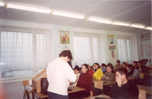
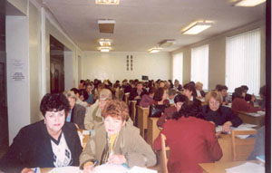
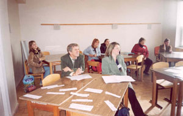
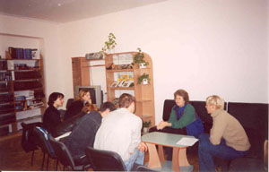
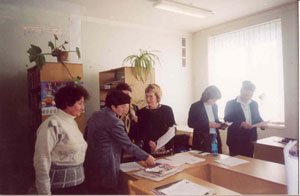
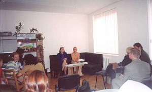

|
|
Новости
|
 |
- 3-4.11.03. На базе центра проведена двухдневная конференция,
организатором, которой является доброволец корпуса Мира Марк Денн.
На базе центра проведена двухдневная конференция, организатором,
которой является доброволец корпуса Мира Марк Денн. В конференции
принимало участие 60 преподавателей английского языка школ Симферополя
и районов Крыма. На конференции преподаватели были ознакомлены
с новыми методами преподавания английского языка и были продемонстрированы
коммуникативные подходы в обучении английского языка. Все участники
получили методическое пособие “Add Colour to Plohotnik, а также
имели возможность приобрести практические навыки работы с ним.
|


|
- 21.10.03. Центром был организован цикл встреч с Катрин
Шерри на тему “Как экономить деньги и как из денег получать деньги”
|

|
- 15.10.03. Центром организована встреча с Экспертом по
Бизнесу Джордж Адумби, который прочитал лекцию по теме: ”Бизнес-план
и стратегия развития бизнеса для вашей профессиональной деятельности”.
15.10.03. Центром организована встреча с Экспертом по Бизнесу
Джордж Адумби, который прочитал лекцию по теме: ”Бизнес-план
и стратегия развития бизнеса для вашей профессиональной деятельности”.
Аудитория имела возможность познакомиться с основными идеями
о создании собственного дела, а также развития частного бизнеса.
Сильвия Стейн и Катрин Шерри дополнили лекцию примерами из собственного
опыта, что позволило расширить тематику лекции и увеличить интерес
слушателей, которые большей частью составляли студенты и преподаватели
экономического отделения университета.
|
|
- 7.10.03. Прошла презентация Патрисии Саливан целью,
которой было ознакомление с основными требованиями и новшествами
Международного экзамена по английскому языку как иностранному
TOEFL.
Прошла презентация Патрисии Саливан целью, которой было ознакомление
с основными требованиями и новшествами Международного экзамена
по английскому языку как иностранному TOEFL. На презентации
присутствовали преподаватели и студенты вузов и школ г. Симферополя,
а также представители местной прессы.
Патрисия Саливан объяснила специфику экзамена TOEFL, основные
требования и нюансы, правила сдачи, а также дала ряд рекомендаций
по подготовке к этому сложному экзамену и продемонстрировала
отдельные элементы теста. По завершении презентации Патрисия
Саливан подарила центру новый выпуск учебника с CD и аудиокассетой,
тем самым была предоставлена посетителям возможность для самостоятельной
подготовки к TOEFL .
|
 |
- 29.09.03. Проведен семинар-тренинг, на который были
приглашены студенты и преподаватели, а также все желающие.
Семинар провела Андреа Колан- директор академических программ
IREX . Аудитории была представлена более детальная информация
о программах международных обменов научными работниками и студентами,
которые администрируются IREX. Было проведено практическое занятие
по заполнению анкет для участия в программах, а также рассмотрены
некоторые вопросы непосредственного проведения научного исследования
и обучения в типичном американском университете, проживания
и адаптации в американском обществе.
|
|
|
|
 |
- 12.09.03. Проведен Круглый стол, посвященный 10-летию
университета.
Темой круглого стола - Роль высшего образования в Америке и
Украине
В дискуссии участвовало 15 человек. Круглый стол был проведен
полностью на английском языке, что содействовало тесному контакту
и взаимопониманию участников, которые большей частью составляли
студенты и преподаватели. Charles Crowther, Silvia Stein, Leanne
Stephenson круглого стола. Острую дискуссию вызвали такие вопросы
как возможность и необходимость получения высшего образования
на Украине и в Америке, трудности в получении образования, а
также влияние предубеждений на получение образования
|
|
|